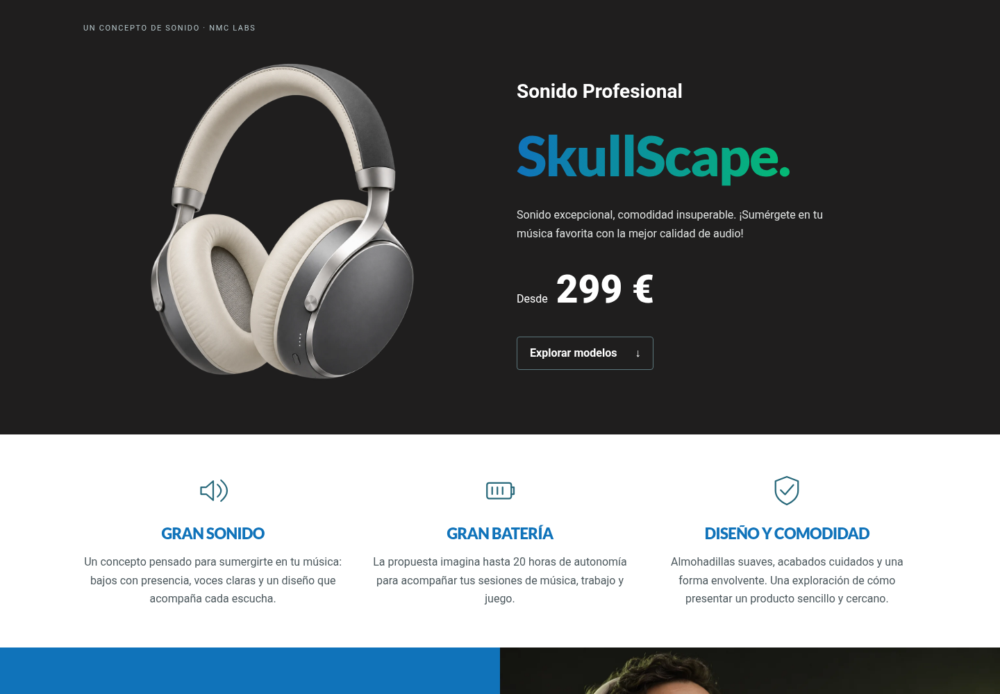
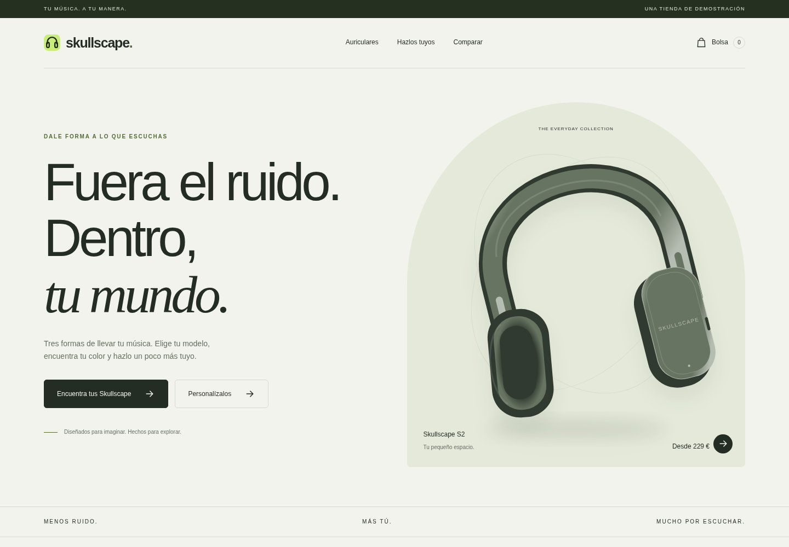
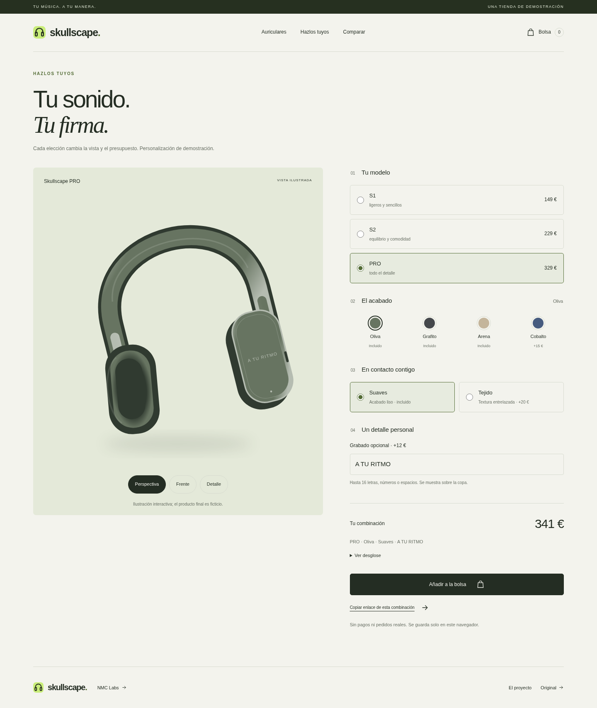

2023 → 2026 · EVOLUCIÓN DEL MISMO PROYECTO
Skullscape
De mirar a hacerlos tuyos
Una landing de auriculares reimaginada como una tienda de producto: elegir un modelo, comparar lo que ofrece y darle un acabado propio.
Explorar la nueva Skullscape ↗El punto de partida
SkullScape nació como segundo proyecto de un curso de HTML y CSS: una marca imaginaria de auriculares, con presentación de producto, características y tres modelos.
El rediseño conserva esa idea de origen y le añade un recorrido completo. La versión de 2023 permanece independiente.
Visitar el original de 2023 ↗
Una colección que se puede explorar
S1, S2 y PRO representan tres formas de escuchar: el día a día, la concentración y las sesiones largas. Cada modelo tiene su ficha, imágenes y características conceptuales.
La nueva dirección visual combina tonos oliva, superficies claras, tipografía amplia y fotografía editorial generada para la marca. El modo oscuro sigue automáticamente el sistema.

De elegir a personalizar
- Encontrar un modelo. Catálogo, filtros de uso y recomendación según presupuesto.
- Comparar. Autonomía, peso, conexiones y funciones en una tabla con selección de modelos.
- Hacerlo propio. Cuatro acabados, dos almohadillas y grabado opcional. La ilustración cambia con cada decisión.
- Entender el precio. Modelo y extras separados en un desglose, con importes calculados desde el catálogo.
- Conservar una combinación. Guardado local y enlace compartible con las opciones elegidas.
- Explorar el recorrido de compra. Bolsa con cantidades y combinaciones distintas, seguida de una confirmación simulada.

Un alcance claro
Los productos, precios y prestaciones son ficticios. Las fotografías se han generado con IA y el configurador utiliza una ilustración propia; no representa una simulación física 3D.
No hay pagos, stock, cuentas, envíos ni pedidos reales. La web no solicita datos personales ni bancarios. La bolsa se guarda en el navegador.
Las fichas y páginas públicas conservan URL propia y canónicas. Toda la tienda demo queda fuera de la indexación. El código se mantiene en un repositorio privado.
Dos etapas, dos versiones
El original conserva skullscape.nmclabs.dev. La nueva tienda se publica de forma independiente en audio.nmclabs.dev.
Explorar la nueva Skullscape ↗Conocer el proyecto ↗